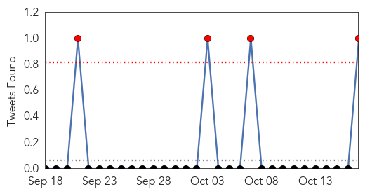
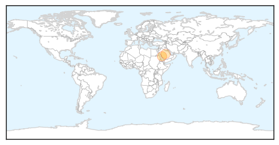
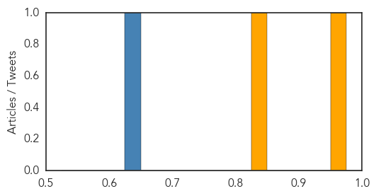
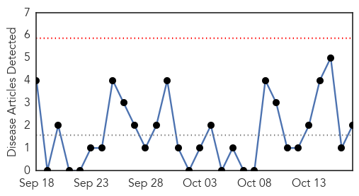
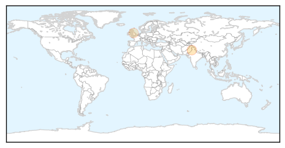

MERS
30-Day Web Trend
0 alerts, 0 warnings

30-Day Twitter Trend
4 alerts, 0 warnings

Article Locations
Article Confidences
Top Articles:
Top Tweets:
- 0.714
- RT: MOH reminds people to use best health practices to avoid MERS-CoV http://t.co/qE4quWIlSh @WHO MERS وزارة_الصحة
- 0.635
- RT: CID: An observational, laboratory-based study of outbreaks of MERS-Coronavirus in Jeddah and Riyadh… Read more at http:/…
Hepatitis
30-Day Web Trend
0 alerts, 0 warnings

30-Day Twitter Trend
0 alerts, 0 warnings

Article Locations
Article Confidences

Top Articles:
Top Tweets:
-
No tweets found for Oct 17, 2014